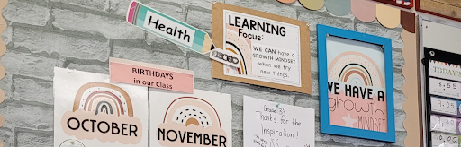
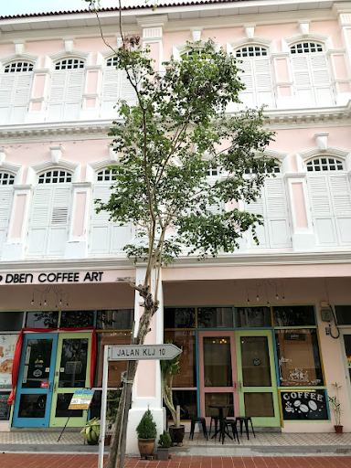
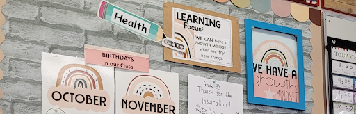
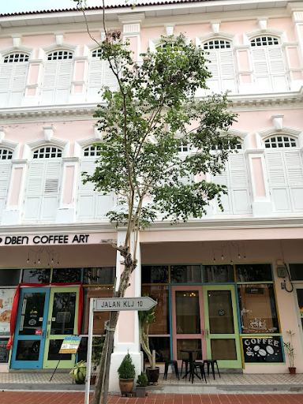

Who Am I
My beliefs about knowledge, learning, and teaching:
- Knowledge is experiential.
- Learning is collaborative.
- Teaching is student led.
Who teachers are to me:
Teachers wear many hats. They provide knowledge, love, and support. They are someone kids can look up to. They teach the target outcomes from the Program of Studies, but they do so much more than that. They teach students about identity, their emotions, how to be life-long learners, and equip them with real world skills. They are mentors, engineers of learning, and designers of positive learning spaces. Teachers play an integral role in kids’ formative years.
Why do I want to be a teacher?
Like many of those who go into education, becoming a teacher is something I've always wanted to do since I started school myself in kindergarten. I want to be a teacher because I enjoy spending time with kids and helping people learn things. My strengths as a future teacher are my attention to detail, organization, empathy, and having a nurturing and caring demeanor. I hope I will bring to my students all of these traits as well as the ability to be a knowledgeable and competent teacher. I hope that I will be someone my students can trust, learn from, lean on, and look up to.
Relevant experience:
- Piano teacher
- Education assistant at Preschool 101 (certified Child Development Assistant)
- Babysitter
- Volunteer at Calgary Public Library (Reading Buddies and Math Quest)
- Volunteer at City of Calgary summer day camps
When I’m not studying or working I’m…
- Listening to music
- Shopping (for clothes or home decor)
- Organizing/decorating
- Trying new restaurants
- Traveling
- Taking pictures
- Spending time with loved ones
My ideas for stress management are:
- Going on walks
- Having a workout routine
- Having teacher friends!
- Planning planning planning
- Creating relationships with my students and focusing on the positives
I’m looking forward to learning more about:
- How teachers really plan and when
- How and where teachers find worksheets and teaching resources
- How teachers evaluate students with IPPs